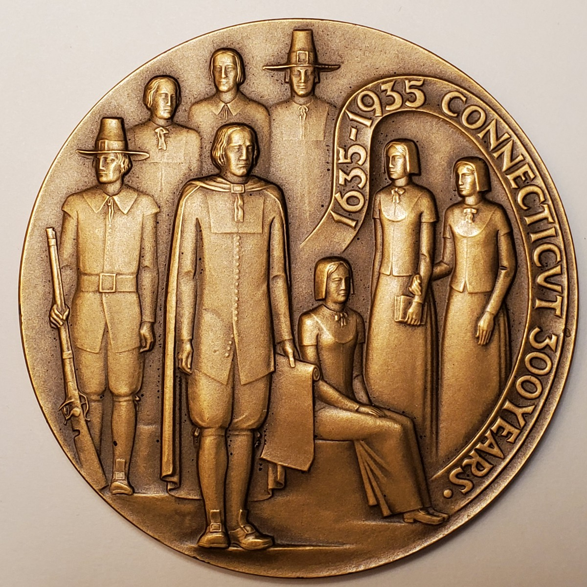
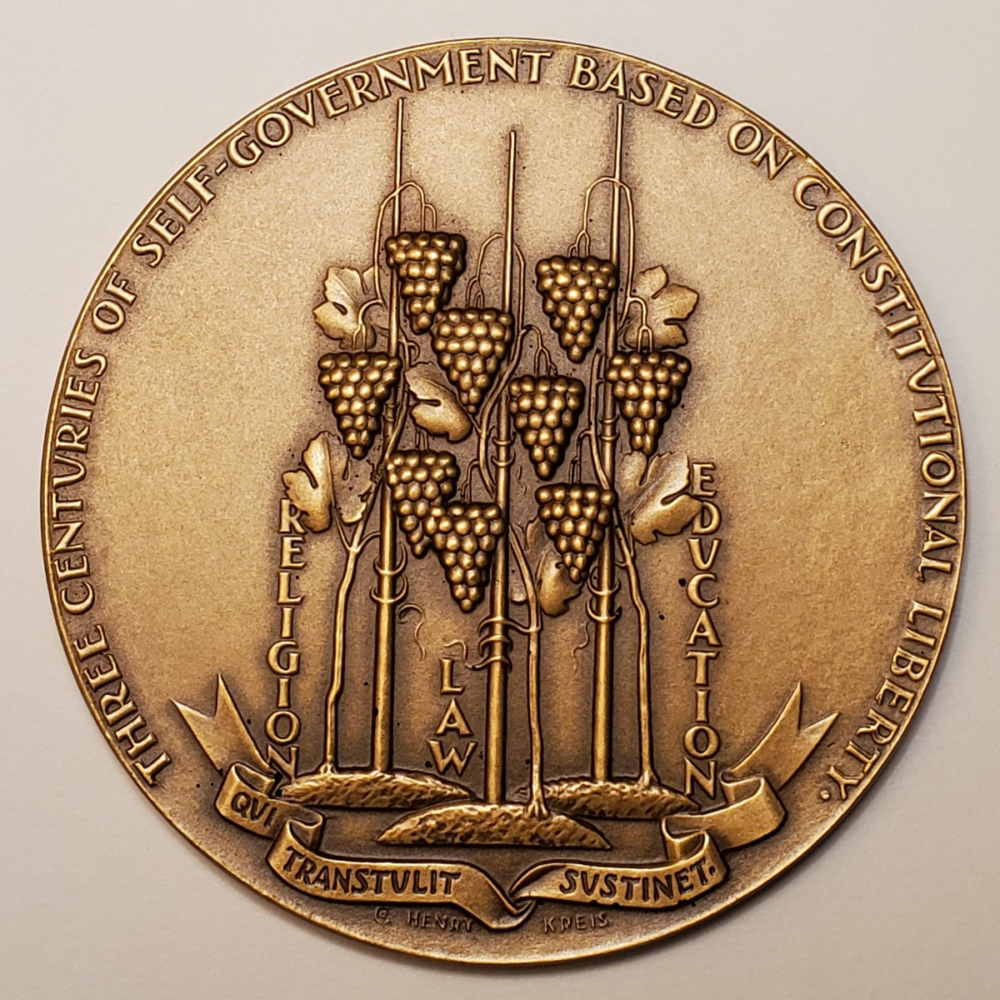
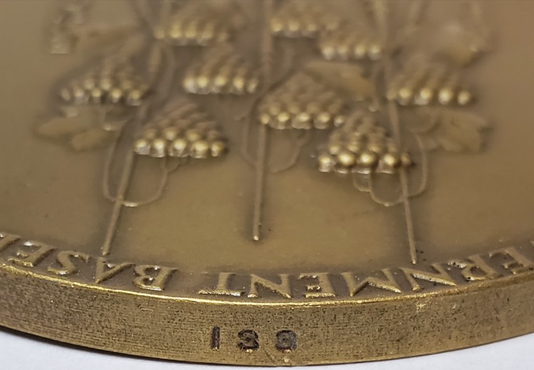

Official medal · 1935
Connecticut
Tercentenary
Henry Kreis's official medal for Connecticut's 300th anniversary joins a group of early settlers with the grapevines and civic ideals associated with the state.
- Designer
- Henry Kreis
- Producer
- Medallic Art Co.
- Mintage
- 2,000
- First edition
- 200 numbered
The issued medal
Two sides of Connecticut's story


Medal photographs from the Kreis family collection.
A distinct object
Medal, not half dollar
The Connecticut Tercentenary Medal and the Connecticut Tercentenary Half Dollar were separate commemorative objects. Kreis designed both, but their imagery, inscriptions, production, and distribution histories are different.
The medal's obverse presents a human history through eight settlers. Its reverse turns to civic identity, adapting the grapevines of the state seal and naming Religion, Law, and Education.

The numbered first edition
Medal no. 133
The first 200 examples were individually numbered on the edge and offered by the Tercentenary Commission for five dollars. The family collection example is number 133.
The remaining medals were offered for one dollar from the total issue of 2,000.
Photograph from the Kreis family collection.
Production and distribution
A New Deal-era public art commission
The medal originated as Public Works of Art Project No. 20 in New Haven, Connecticut, and was produced in bronze by the Medallic Art Company of New York.
Its distribution joined an official state commemoration with a deliberately limited numbered edition and a larger public issue.
Related design studies
Unchosen plasters at Yale
Yale University Art Gallery holds two 10-inch-square plaster models cataloged as unchosen designs for the medal. These records document alternatives considered before the issued composition.
Specifications
Medal details
- Year
- 1935
- Medium
- Bronze
- Diameter
- 75.3 mm
- Reference weight
- 156.42 grams
- Producer
- Medallic Art Company
- Mintage
- 2,000
- Numbered edition
- First 200
- Numbered price
- $5
- Remaining price
- $1
- Project
- PWAP No. 20, New Haven
Research sources